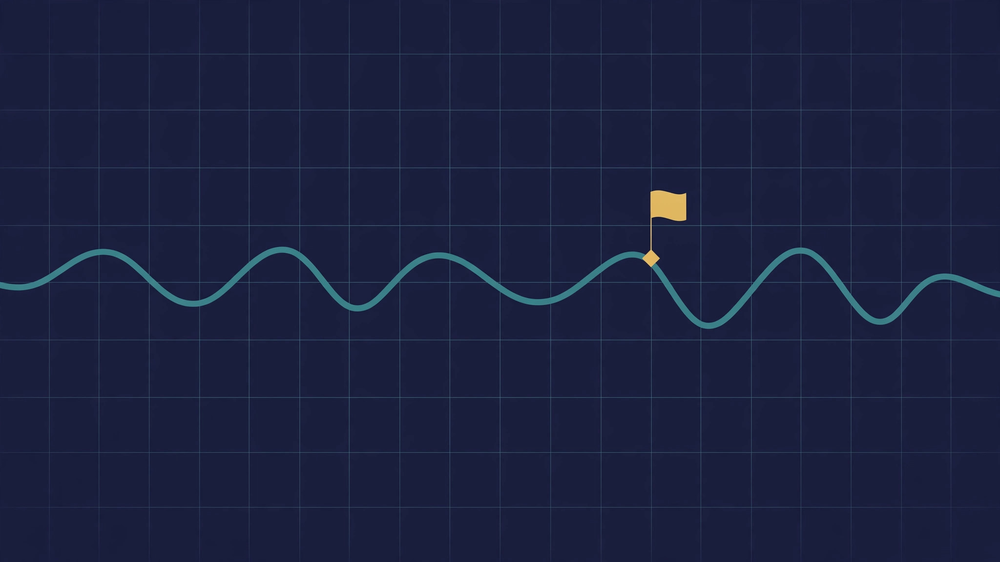

W3 LLC · Series S03 · Intended / Planned
Diagnostic.X
AI diagnostics governed by a safety mandate — assessment that must earn trust.
Source for the name and number: the April 2026 internal W3 series list (internal printout, dated 2026-04-03, not a Wyoming Secretary of State filing). The list names 33 sub-series, Series 1–33. It proves no filing, no legal designation, no bank account, no EIN, and no Steward Council per series.
What this series is
Diagnostic.X is Series 3 in the April 2026 internal W3 series list, and it is one of the few series with a published description beyond its name. The Foundation site’s article summary describes it as AI diagnostics governed by an AGI-safety mandate, liability-isolated — and the site carries a full article, “Diagnostic.X Investment Thesis”, summarised as AI diagnostics governed by a safety mandate. Those words are site copy and an article summary, not a filing, a product specification, or evidence of a working system, but they give this series a clearer stated direction than most of its neighbours: diagnostics, done by AI systems, under an explicit safety obligation.
The domain the name implies is diagnosis in the broad sense: assessment that helps a human decide what is wrong, what is at stake, and what to do next. In medicine that could mean helping a clinician interpret a test, an image, or a history; in other fields the same pattern applies — an assessment, a degree of confidence, and a recommendation that a human then judges. What matters for this series is not the breadth of possible applications but the constraint the site copy puts on all of them: a safety mandate. A diagnostic system that is wrong is not merely unhelpful; in a clinical setting it can harm. So the safety mandate is not decoration. It is the condition under which diagnostics by an AI system could be worth doing at all.
That mandate raises questions this page should name rather than answer on the series’ behalf. Who sets the safety threshold, and how is it tested? What happens when the system is uncertain — does it say so, and in a way a busy human will actually notice? Who is responsible when a diagnosis is missed or wrong, and how is that responsibility recorded? What data is the system trained and tested on, and whose cases does it handle worst? None of those questions has a verified answer for Diagnostic.X today. The Foundation site also describes, in its article summaries, an Alignment Evaluation Gate — pre-registered thresholds, an independent judge, separation of powers, and a four-domain probe architecture, whose job is to refuse to ship a model that fails its pre-registered safety evaluation. That gate is described on the home page as a proposed system, with no live feed claimed, and this page does not claim it is operating for Diagnostic.X.
Liability isolation is the other half of the site’s description, and it deserves a plain translation. The idea, as the site presents it, is that each series sits behind its own liability wall, so that a failure in one series does not contaminate the others or the parent. Whether that wall would hold in practice depends on filings, contracts, insurance, and accounting that do not yet exist for this series in any verified document. The claim on this page is therefore narrow: liability isolation is the stated design intention for the W3 series structure, not a protection Diagnostic.X currently enjoys. A reader who needs that protection to be real should ask for the designation documents and the insurance, not take a landing page’s word for it.
Metaverse connection
Anchored world: Diagnostic.X, 5.342706937662501, 101.5663444901012. This is one of the verified anchored worlds in the Foundation’s metaverse work: a Diagnostic.X fabric with those coordinates. Its fabric JSON is live on GitHub Pages under the WorldForge-Browser my-fabric directory (fabric JSON), but the referenced assets behind it — on the order of two hundred GLB model files plus the map.wasm module — are not hosted there, so the world does not render fully in Artemis yet. That is the verified state: a published fabric definition, an anchored location, and an incomplete render because the assets it points to are not in place.
What that means in practice is that the world exists as a plan and a partial build, not as a place a visitor can enter today. The next step, if it is to be visitable, is specific: host the referenced GLB assets and map.wasm at the paths the fabric expects, then verify the render in Artemis. Until that is done, any image or description of the world should be labelled as a concept or a partial build, not as a live world. And the world is not on RP1: zero worlds are live on RP1, no fabric or service for this series has ever been attached there, and the RP1 Attach wizard needs a live metaverse-server endpoint before any attach can happen.
For a diagnostics series, a metaverse world is best understood as a possible setting for training, demonstration, and review — a place where a diagnostic workflow could be walked through, or where a difficult case could be discussed — rather than as a clinic. No such use is verified, and this page does not claim the world is used for diagnosis, training, or patient contact. The anchored coordinates are a location for a future build, not evidence of a working diagnostic environment, and nothing here should be read as a medical claim: Diagnostic.X does not diagnose anyone today.
What exists today — and what is planned
What exists today
Three things are verified. First, the name and number: Diagnostic.X, Series 3, in the April 2026 internal W3 series list. Second, the published direction: AI diagnostics governed by a safety mandate, as summarised in the Foundation site’s article list, with an article titled “Diagnostic.X Investment Thesis”. Third, the anchored metaverse fabric: a Diagnostic.X world at 5.342706937662501, 101.5663444901012, with its fabric JSON live on GitHub Pages and its assets not yet hosted, so it does not render fully in Artemis. That is the complete verified inventory for this series.
What is planned
Everything else is planned, not existing: the formation of W3 LLC and the designation of this series; a human Steward Council and operating rules; any diagnostic product, model, dataset, validation study, or clinical relationship; any safety evaluation actually run under the Alignment Evaluation Gate; any funding; and a fully rendering world on a live metaverse service. Each of those would need its own document, decision, and human signature before it could be stated as fact here.
The gap between the stated ambition and the verified inventory is the point of this page, not a flaw in it. A diagnostics series that overstated its readiness would be dangerous in a way that an overstated education or city series would not be, because a reader might act on a diagnostic claim. So this page holds the line explicitly: Diagnostic.X is a planned series with a stated safety mandate and an anchored but incompletely rendered world. It has no verified diagnostic capability, no patients, no clinicians, and no validated results, and it should not be described as if it had any of those things until the documents exist.
How it fits — tier, related series, and governance
The intended structure, in words. At the top of the intended structure sits the AGI Future Foundation, a filed California nonprofit public benefit corporation (Entity No. B20260196664, Articles filed 2026-04-24, EIN assigned 2026-05-07). Below it, in the intended plan, sits W3 LLC, a Wyoming series LLC, and below that the individual series — of which Diagnostic.X is S03 in the April 2026 internal list. That is the plan as described in the Foundation’s own materials. It is not a description of a completed legal structure: W3 LLC formation and per-series designation are not verified in filings, so the middle and bottom tiers of that diagram are intended, not established. Nothing on this page should be read as saying the Foundation owns, controls, or has formed Diagnostic.X, or that Diagnostic.X exists as a company, a fund, or an operating business today.
Related series. The series that sit closest to Diagnostic.X by subject matter are listed in the card below. “Related” here means only that their names point at neighbouring domains. It does not mean that any joint project, shared budget, shared staff, partnership agreement, or data-sharing arrangement exists between them. No such arrangement is verified for Diagnostic.X, and none is claimed here. If two series ever do work together, that would need its own written agreement, its own human approvals, and its own public record — none of which exists yet for this series.
Related series (by domain only)
S04 Curable.X (treatment following diagnosis), S05 BioPharma.Go (therapies and medicines), and S14 AskDoc.X (clinical questions and guidance) are the nearest neighbours by domain, with S18 BioDAO.blockchain DAO (shared biomedical data infrastructure, as the name implies) alongside them. No joint work is verified with any of them.
Governance — planned, not yet operating
The planned governance model for the W3 series, as described on the Foundation site, is DAO-managed day-to-day work with human decision-making at every point that matters: agents may draft proposals, prepare research, and operate routine systems, but humans decide, humans sign, and humans move funds. A Steward Council of humans is intended to hold that gate. No Steward Council membership, no signed votes, no seated manager, and no operating agreement for Diagnostic.X is verified in the files, so none is named here. Until those human roles are seated in writing, there is no one who can speak for, commit, or spend on behalf of this series — and this page does not do so.
What governance would have to answer first. Before Diagnostic.X could do substantive work, its human stewards would need to settle, in writing, at least these questions: what exactly is in scope and what is out of scope; who the stewards are and how they are replaced; what agents may and may not do without a human signature; how money, if any ever exists, is held, accounted for, and reported; and how the series relates to the Foundation’s public-benefit purpose. None of those answers exists in a verified document today. Listing the questions is not the same as answering them, and this page deliberately does not pretend otherwise.
What would have to happen before this series could operate
A named series is not a formed series. For Diagnostic.X to move from a line in an internal list to an operating venture, several distinct steps would each have to happen, in order, with documents to prove them. First, W3 LLC itself would need to be formed and evidenced by a filing that can be checked. Second, this series would need to be designated in writing as a series of that LLC, with its own name, purpose, and manager recorded. Third, the series would need its own operating rules, its own human stewards, and its own segregated accounting — so that its money, liabilities, and records are not mixed with any other series or with the Foundation. Fourth, any bank account, contract, hire, or public claim would need a named human signer acting under those written rules. Fifth, any fundraising would need its own counsel-approved documents, its own issuer, and its own securities compliance — it could not borrow the Foundation’s nonprofit status, and the Foundation, as filed, cannot offer equity or a SAFE. None of those steps is verified as done for Diagnostic.X. This section is included so that a reader can see the gap plainly, rather than mistaking a polished landing page for a finished company.
That gap is also why this page carries no timeline. There is no launch date, no funding date, and no hiring date stated here, because none has been set in a verified document. A date on a landing page would look like a commitment; without a filing, a budget, and a human team behind it, it would be a decoration, not a plan. When a real date exists, it should appear here with the document behind it cited.
Proposed projects — for DAO review
These are proposals for the series DAO team to review. None is approved, funded, staffed, or scheduled.
Grounded in the published description on this page, which is site copy and an article summary, not a filing or a product specification: AI diagnostics governed by an AGI-safety mandate, liability-isolated. The domain is assessment that helps a human decide what is wrong, what is at stake, and what to do next. No working diagnostic system is verified for this series.
Safety mandate charter draft
A written charter stating the safety obligations any diagnostic assessment from this series would carry, including who is responsible when an assessment is wrong and how harm is prevented. The charter would be written for human stewards to approve before any assessment is offered. No such charter exists today.
What success would look like: A charter draft exists that the stewards have reviewed, stating the safety obligations in plain language.
Reviewing team: the Diagnostic.X DAO
Status: PROPOSED — pending DAO team review
No funding, partner, or timeline yet.
Clinician-in-the-loop assessment flow
A proposal for an assessment flow in which an AI assessment supports a human clinician decision and never replaces it, for example by helping a clinician interpret a test, an image, or a history. The proposal would mark every point where a human decides. No such flow is verified as built.
What success would look like: A flow diagram exists with every human decision point marked, reviewed by a named clinician for real-world sense.
Reviewing team: the Diagnostic.X DAO
Status: PROPOSED — pending DAO team review
No funding, partner, or timeline yet.
Liability isolation design note
A written note on how this series would keep diagnostic liability separate from the rest of the network, so that a failure in one assessment does not spread to other series or to the Foundation. The note would be a design document for counsel and stewards to review. No such note exists today.
What success would look like: A design note exists that counsel and stewards have reviewed, describing how liability would stay isolated to this series.
Reviewing team: the Diagnostic.X DAO
Status: PROPOSED — pending DAO team review
No funding, partner, or timeline yet.
Trust and explanation standard
A proposal that every assessment explain its basis in plain language a person can follow, so that trust is earned rather than assumed. The standard would cover what an explanation must contain and what it must never hide. No such standard exists today.
What success would look like: An explanation template exists with worked examples that a non-specialist reader can follow from evidence to conclusion.
Reviewing team: the Diagnostic.X DAO
Status: PROPOSED — pending DAO team review
No funding, partner, or timeline yet.
Assessment scope boundary paper
A written list of what this series will and will not assess, so that its limits are stated before any work begins. The paper would name the domains in scope and the domains explicitly out of scope. No such paper exists today.
What success would look like: A boundary paper exists that the stewards have approved, naming in-scope and out-of-scope assessment domains.
Reviewing team: the Diagnostic.X DAO
Status: PROPOSED — pending DAO team review
No funding, partner, or timeline yet.
Code and repositories
- diagnosticx-site — Landing stub only, no substantive code.
- agi-corp-worlds —
agents/prompts/diagnostic-x.jsonis one of the roughly 40 generated prompt files from the metaprompt system (one system prompt per coordinator and specialist, generated from the world spec and held to a ten-point eval). Its contents were not individually read in this pass; the one sample file read in full,locator-x.json, passed all ten checks. - WorldForge-Browser — two per-series prompt files were identified in the org sweep and not read: a tutor prompt,
worldforge/out/training/tutors/diagnostic-x.md, and an avatar prompt,worldforge/out/avatars/prompts/diagnostic-x.md. Their contents have not been read, so nothing about them is described here.
Visit in VR
Diagnostic.X is one of the seven flagship worlds in the worlds-3d web 3D lobby: a playable world definition with 7 NPCs, 6 quests, and 10 collectibles, anchored at 5.342706937662501, 101.5663444901012. The lobby labels itself plainly: a web 3D interpretation — not RP1, not footage — and zero worlds are live on RP1.
- Foundation VR tour — the Foundation’s VR tour shell.
- worlds-3d lobby — the seven flagship worlds and the full 544-world index, where this series also has a curated entry (
diagnostic-x). - Diagnostic.X in the worlds-3d player — the flagship world.
Every world in the lobby gets three scripted advisors — Host, Steward Liaison, and Alignment — who are scripted guides under an advisor contract, not AI: no model runs behind one, and advisors carry messages but never decide. All NPC dialogue in the lobby is original game dialogue, never attributed to a real person, and no NPC claims to be a real person.
The biology in depth

Diagnostics is the field of measurement that informs clinical decisions: tests, images, and signals that help a clinician tell what is wrong with a patient, how far a disease has progressed, and whether a treatment is working. A diagnostic claim is a strong claim — it changes what happens to a person — so the field is built around validation: how often a test is right, how often it is wrong, in which population, against which reference standard, and under whose oversight. AI diagnostics adds a further layer: a model that reads images or signals must be validated on data that resembles the patients it will serve, monitored as that data changes, and governed for liability when it errs. Nothing on this page is a clinical or diagnostic recommendation, and no test described here is presented as validated, approved, or ready for use.
Longevity research touches diagnostics only as a direction: measurements of ageing — molecular, imaging, or functional — are studied as possible markers of healthy ageing, and none is an established measure of anything on this page. No diagnostic test, accuracy figure, trial, or timeline is verified for this series, and none is claimed.
What is verified for this series is a landing stub only. diagnosticx-site is a six-line README describing a landing for healthcare and systems diagnostics under an AGI-safety mandate, with no code behind the name. Its README repeats a figure, 66-W3, that conflicts with the verified April 2026 list of 33 named sub-series; that figure is not repeated here as fact. The subdomain diagnosticx.agifuturefoundation.org was unreachable by curl in the 2026-11-06/07 check and is not linked here as live.
Planned work — a written mission naming the diagnostic field in scope, a validation and liability design, a Steward Council, and any work with patient data only under qualified human direction with ethics review and counsel — is described in the sections above as planned, not existing. The nearest neighbours are S4 Curable.X, where a diagnosis would lead to treatment; S14 AskDoc.X, where health questions are answered; and S18 BioDAO.blockchain DAO, where biological measurements would be recorded.
All verified BioDAO tools are listed together, with charts, on the BioDAO tools page.
Get involved / contact
If you are interested in Diagnostic.X, the route is a conversation, not a transaction. Write to x@agifuturefoundation.org and say who you are, what your interest is, and what you could contribute — research, building, review, or simply following the work. A reply, if one comes, will come from a human. Agents writing in should follow the same route the Foundation sets out on its home page: state your operator and your human principal, and do not present yourself as the Foundation or commit it to anything.
What this page is not. This page is not an offer to sell securities, not an invitation to invest, and not a solicitation of funds for this series. There are no investment terms here — no price, no valuation, no cap, no discount, no minimum, no return, and no deadline — because there is nothing to invest in yet: the series is not formed, not funded, and not offered. No suggested valuation is assigned to Diagnostic.X on this page, and none should be inferred from valuations discussed elsewhere for other entities; those figures, where they exist, are illustrative planning figures for different issuers and do not transfer to this series. If you are considering any payment to any entity in this family, ask first for the filing, the determination letter if tax treatment matters to you, and the counsel-approved offering documents — and take independent legal and tax advice before acting.
Nothing on this page is legal, tax, or financial advice. Filed facts stated here are: AGI Future Foundation, California Nonprofit Public Benefit Corporation, Entity No. B20260196664, Articles filed 2026-04-24, EIN assigned 2026-05-07; no IRS 501(c)(3) determination letter in the files, so no tax-exempt status or tax-deductible donations are claimed. AGI Corp has an EIN only (assigned 2026-05-16); its incorporation is unverified. The live Foundation site lists a “66-W3 Wyoming Series network” and “33 agentic subsidiaries” — that numbering is site copy, not a filing, and it sits alongside the 33 named sub-series in the April 2026 internal list.
Long-form articles
Three long-form articles (4,000–5,000 words each) go deeper than this page:
- Article 54 · Screening Is Not Diagnosis: The Line That Matters, and Why It Is So Often Crossed (5,205 words)
- Article 55 · How Do You Know a Diagnostic Tool Works? Sensitivity, Specificity, and What a Number Hides (5,246 words)
- Article 56 · The Clinician in the Loop: Where AI Assistance Helps, and Where It Must Not Decide (5,365 words)